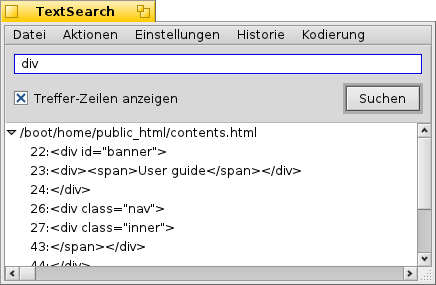

Deutsch
Deutsch Català
Català English
English Español
Español Français
Français Italiano
Italiano Magyar
Magyar Polski
Polski Português
Português Português (Brazil)
Português (Brazil) Română
Română Slovenčina
Slovenčina Suomi
Suomi Svenska
Svenska 中文 ［中文］
中文 ［中文］ Русский
Русский Українська
Українська 日本語
日本語 TextSearch
TextSearch
| Deskbar: | Kein Eintrag; wird normalerweise über das Tracker Add-on gestartet. | |
| Ort: | /boot/system/apps/TextSearch | |
| Einstellungen: | ~/config/settings/TextSearch |
TextSearch sucht nach Zeichenfolgen in Textdateien. Normalerweise wählt man dazu die Dateien oder Ordner aus, die durchsucht werden sollen und wählt TextSearch aus Trackers Add-on Kontextmenü.
Im Textfeld oben wird der Suchbegriff eingegeben und die Suche per RETURN oder Klick auf gestartet. Ist die Option aktiviert, werden die Suchergebnisse automatisch aufgeklappt und zeigen dann die Zeilennummern der Fundstellen in den Dateien, die den Suchbegriff enthalten.
Nur ein paar kurze Erläuterungen zu den ansonsten sich selbst erklärenden Menüpunkten:
Menü Datei | ||||
| ALT N | Öffnet ein neues Fenster, um dieselben Dateien/Ordner nach einem neuen Begriff zu durchsuchen. | |||
| ALT F | Zum Ändern der Dateien oder Ordner, die durchsucht werden sollen. | |||
Menü Aktionen | ||||
| ALT T | Entfernt alle Suchergebnisse aus der Liste, die nicht ausgewählt sind. | |||
| ALT O | Öffnet die ausgewählten Dateien mit ihrer bevorzugten Anwendung (wie bei einem Doppelklick). Falls es sich um einen Texteditor handelt, der das unterstützt (wie Pe), lässt sich auch genau zu der Zeile der Fundstelle springen. | |||
| ALT K | Öffnet die Speicherorte der gerade ausgewählten Dateien im Tracker. | |||
| ALT B | Kopiert die momentane Auswahl in die Ablage. | |||
Menü Einstellungen | ||||
| Nützlich wenn man sich in einer Unix-Umgebung bewegt, in der Verwaltungsdateien oft in ".Ordner" versteckt werden. Sourcecode Versionierungssysteme wie SVN und CVS sind Beispiele für Anwendungen, die das so machen und auch unter Haiku weit verbreitet sind. | ||||
| TextSearch benutzt das Konsolenprogramm grep. Dazu müssen spezielle Zeichen wie '"*\\$?! und Leerzeichen mit einem \\ "escaped" werden. Deaktiviert man diese Option, heißt das, dass man das von Hand machen muss, im Gegenzug erhält man allerdings die mächtigen Möglichkeiten von Regulären Ausdrücken. | ||||
| TextSearch ist momentan nur zur Suche von Begriffen in reinen Textdateien sinnvoll zu gebrauchen. Deaktiviert man diese Option, werden alle Arten von Dateien durchsucht. | ||||
Menü Historie | ||||
| Enthält kürzlich benutzte Suchbegriffe. | ||||
Menü Kodierung | ||||
| Erlaubt bei Bedarf verschiedene Zeichencodierungen. | ||||